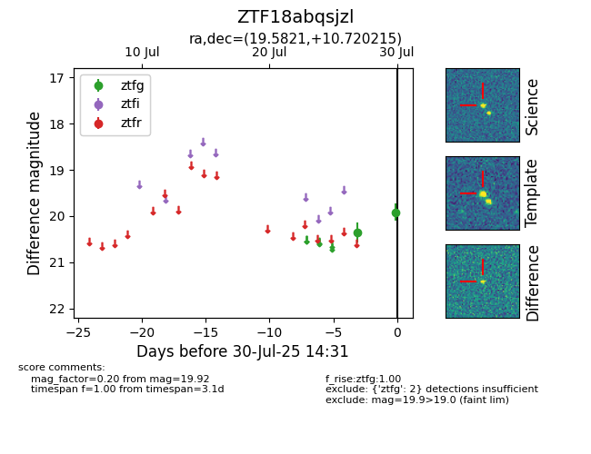

Target ZTF18abqsjzl at 2025-07-30 14:31, see:
FINK: fink-portal.org/ZTF18abqsjzl
Lasair: lasair-ztf.lsst.ac.uk/objects/ZTF18abqsjzl
ALeRCE: alerce.online/object/ZTF18abqsjzl
alt names
ZTF18abqsjzl (ztf,fink)
coordinates:
equatorial (ra, dec) = (19.5821,+10.72021)
galactic (l, b) = (133.6016,-51.59359)
photometry
last ztfg=19.92
2 ztfg detections
